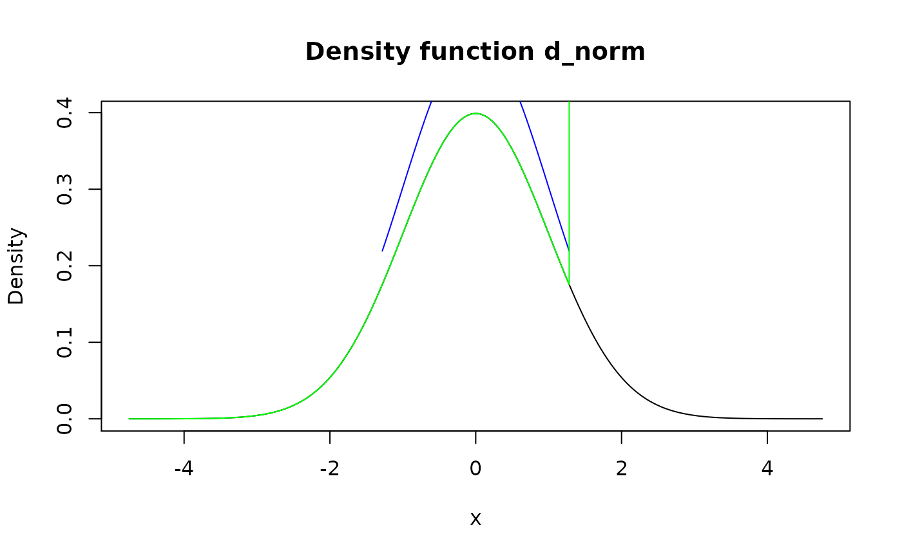

Modify tail(s) of distribution defined by certain cutoff level using method of choice. This function is useful for doing robust analysis in presence of possible outliers.
form_tails(f, level, method = "trim", direction = "both")| f | A pdqr-function. |
|---|---|
| level | Cutoff level. For direction "both" should be between 0 and 0.5; for "left" and "right" - between 0 and 1. |
| method | Modification method. One of "trim" or "winsor". |
| direction | Information about which tail(s) to modify. One of "both", "left", "right". |
A pdqr-function with transformed tail(s).
Edges for left and right tails are computed as level and 1 - level quantiles respectively. The left tail is interval to the left of
left edge, and right tail - to the right of right edge.
Method "trim" removes tail(s) while normalizing "center part". Method
"winsor" "squashes" tails inside center of distribution in dirac-like
fashion, i.e. probability of tail(s) is moved inside and becomes concentrated
in 1e-8 neighborhood of nearest edge.
Direction "both" affect both tails. Directions "left" and "right" affect only left and right tail respectively.
form_resupport() for changing support to some
known interval.
summ_center() and summ_spread() for computing summaries of distributions.
Other form functions: form_estimate,
form_mix, form_regrid,
form_resupport, form_retype,
form_smooth, form_trans
# Type "discrete"
my_dis <- new_d(data.frame(x = 1:4, prob = (1:4)/10), type = "discrete")
meta_x_tbl(form_tails(my_dis, level = 0.1))#> x prob cumprob
#> 1 2 0.250 0.250
#> 2 3 0.375 0.625
#> 3 4 0.375 1.000#> x prob cumprob
#> 1 3 0.6 0.6
#> 2 4 0.4 1.0
# Use `form_resupport()` and `as_q()` to remove different levels from both
# directions. Here 0.1 level tail from left is removed, and 0.05 level from
# right
new_supp <- as_q(d_norm)(c(0.1, 1-0.05))
form_resupport(d_norm, support = new_supp)#> Density function of continuous type
#> Support: ~[-1.28155, 1.64485] (9236 intervals)
# Examples of robust mean
set.seed(101)
x <- rcauchy(1000)
d_x <- new_d(x, "continuous")
summ_mean(d_x)#> [1] 0.6504152#> [1] 0.1094364#> [1] 0.1563657